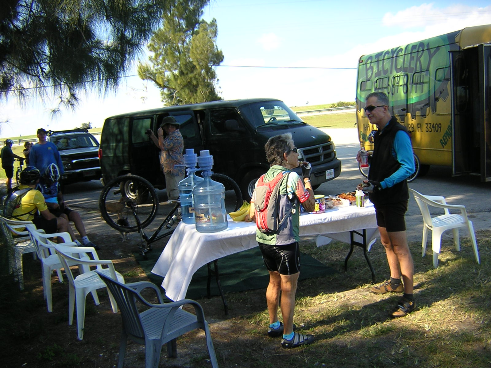

The Big "O" |
|
On your mark. Get set. Go! About 20 or so riders came for the trip. I was worried there would just be like five fast, lean, 20-somethings and then slow old me. Not so, there was a great mix of people riding at all speeds. |
| The south side of the lake is surrounded by sugercane fields. | We rode a very long way on pavement. |
| We flew along the pavement at great speed, but all good things must end. This rocky section on the west side of the lake let the air out of everyone's tires. Good news is: Soft tires absorb the bumpyness of the rocks. |  | How many bike ride rest stops sport white tablecloths on the food table? This was a very elegant affair. I'm glad I wore my good jersey:-) |
| This rider took care of removing all nails and thorns from the trail. When he ran out of nails and thorns, he moved on to other people's pinch flats. |
| We stayed the night at the Pier II Resort in Okeechobee. It was a very nice place. Even though they specialize in Bass Fishing, they were very accomodating to cyclists. They even let my beloved bicycle sleep in the same room as me. Not every hotel will allow mountain bikes to be pushed though the lobby and along the nice, carpeted hallways. |
| The lake ride is prettiest in the morning and evening. Sunset and moonrise are fun to watch as the light is beautifully reflected in the water. This is when the wildlife is most active as well. In the heat of the day, the wildlife viewing becomes questionable. Delerious from the sun, this man saw ostiches. Really, they are driftwood that has arranged itself in the form of birds. After careful inspection he realized it was all a mirage and made the long trek back to the trail. |
| Here is the real hero of the ride -- behind a laid-back demeanor, the likes of which is seldom observed to exist North of Key Largo, lies a ruthlessly efficient support and gear coordinating machine. |